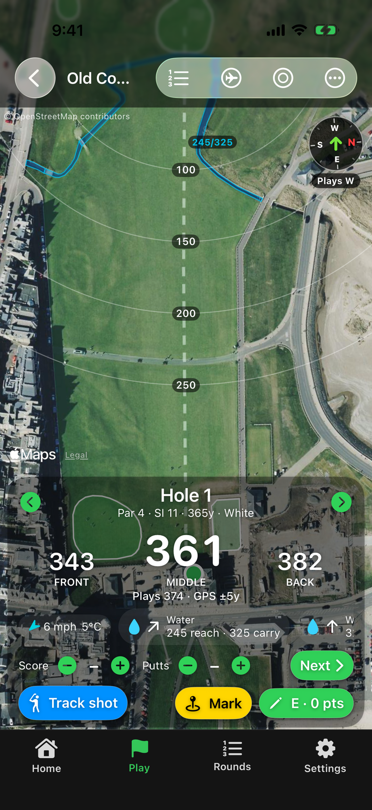
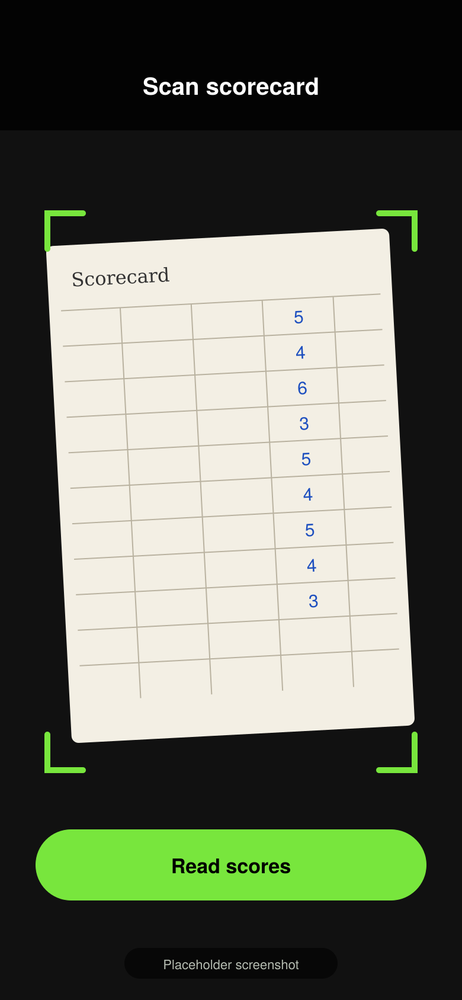

1st Golf GPS GPS yardages for every UK golf course
Accurate yardages, scoring, shot tracking and handicap, all on your iPhone. No accounts, no adverts.
- For iPhone
- Made in the UK
- No accounts
- No adverts

Every UK course
Front, centre and back yardages on courses right across the UK, updating as you walk.
Plays-like distances with live wind
Yardages adjusted for the wind on the day and the slope up or down to the green.
Score, track and handicap
Quick scoring for you and your partners, shot tracking, stats and a handicap index worked out the WHS way.
Everything you need from tee to green
Made by a golfer, for golfers. Features marked Premium are part of the planned Premium plan.
On the course
GPS yardages
Distances to the front, centre and back of the green on every UK course, updating as you walk.
Satellite hole maps
Each hole is lined up to play up the screen. Tap anywhere to measure to a target.
Layup arcs Premium
Arcs at 100, 150, 200 and 250 on the hole map, plus a green view.
Hazards
Bunkers and water ahead, shown left, in line or right, with the distance to reach them and to carry them.
Plays-like distances Premium
Adjusted for live wind and the slope up or down to the green.
Live wind Premium
Speed, gusts and direction relative to your shot, plus the temperature.
Club suggestions Premium
The right club from your bag for the shot in front of you.
Compass
Shows N, E, S and W, plus which way each hole plays.
Hole flyover
Glide down the hole from tee to green before you play it.
Choose your tees
Black, blue, white, yellow or red. Lengths, pars and stroke index change for every hole.
Auto-advance
Moves to the next hole when you reach the tee.
Lock Screen yardages Premium
Front, centre and back on the Lock Screen and Dynamic Island while you play.
Pin, notes and fixes
Today’s pin position, hole notes, and “Fix this hole” to correct the map yourself.
Scoring
Quick scoring
Score and putts for each hole, then tap Next.
Playing partners
Score up to 3 friends, with a live leaderboard.
Stableford points Premium
Worked out using your handicap and the stroke index.
Official scorecard data
Pars, stroke index, yardages, course rating and slope where available.
Shareable scorecard
Send a scorecard image to friends or post it on social media.
9 or 18 holes
Play the front 9, the back 9 or the full 18.
After the round
Add a past round
Type it in, or scan your paper scorecard with the camera.
Handicap index
Worked out the World Handicap System way from your rated rounds, including 9-hole rounds.
Stats and trends Premium
Handicap trend, scores, putts, fairways hit, greens in regulation, and your birdie, par and bogey split.
Shot tracking Premium
Learn how far you really hit each club.
Goal tracker
Set a target such as “Break 90” and watch your progress.
Home screen
Your stats, the nearest course with today’s weather and sunset time, your favourites and your bag.
Light and dark themes
Pick whichever is easiest to read on the course.
Battery saver mode
Helps your battery last the full round.
Backup and restore
Save all your rounds and settings to one file, and restore them later.

Scan your scorecard
Got a pile of old paper cards? Add past rounds in seconds by pointing your camera at them.
- Point your camera at a paper scorecard.
- The numbers are read on your iPhone. The photo isn’t uploaded or kept.
- Check and save. The round counts towards your stats and handicap index.
Free to play. Premium when you want more.
Free
Everything you need to get round the course.
- GPS yardages on every UK course
- Satellite hole maps
- Hazards
- Scoring
- Your last 5 rounds
Premium
Everything in Free, plus:
- Plays-like distances and live wind
- Club suggestions
- Shot tracking and club distances
- Lock Screen yardages
- Layup arcs and green view
- Stableford scoring
- Stats and trends
- Unlimited round history
Subscriptions are handled by Apple and can be cancelled any time in your iPhone’s Settings.
Your data stays on your iPhone
Your rounds, scores, shots, bag and handicap are stored only on your phone. Your location is used on the phone to measure distances and is never stored on our servers or sold.
- No accounts
- No adverts
- No tracking or analytics
On the way
Questions golfers ask
Does it work on every UK course?
Yes. 1st Golf GPS covers golf courses across the UK, using course layouts from OpenStreetMap. If a hole doesn’t look quite right, use “Fix this hole” to correct the map yourself. Official scorecard details such as course rating and slope are shown where available.
Does it need signal?
Your position comes from your iPhone’s GPS, which doesn’t rely on mobile signal. The full list of UK courses is built into the app, and the first time you open a course its hole layouts download and are then saved on your phone. Live wind, weather and satellite imagery need a data connection.
What about battery?
GPS does use battery, so the app has a Battery saver mode to help it last the round. With Lock Screen yardages (Premium) you can see front, centre and back without unlocking your phone.
Is my handicap official?
No. The app works out a handicap index the World Handicap System way from your rated rounds, including 9-hole rounds. It’s a guide for your own use; your official handicap still comes from your club.
How do I cancel?
Subscriptions are handled by Apple. Open Settings on your iPhone, tap your name, then Subscriptions, choose 1st Golf GPS and tap Cancel Subscription. You can cancel any time.
More answers on the support page.